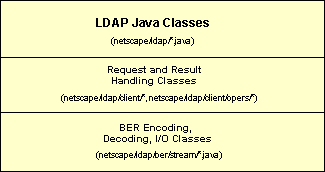
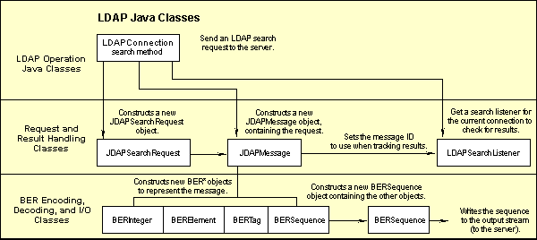
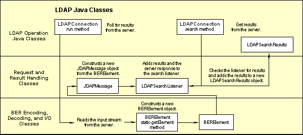

Overview
The source code for the Directory SDK for Java consists of
the Java classes that implement the LDAP API. These include
classes and methods that can establish sessions with LDAP servers,
create and send LDAP requests to the servers, and retrieve
responses from the servers. The SDK also includes classes
for getting and editing schema information for the LDAP server.
In the LDAP protocol, requests and responses are encoded using the Basic Encoding Rules (BER). The SDK source code include classes for encoding and decoding data, according to these rules.
Source Tree Directory Structure
The source code for the Netscape Directory SDK for Java is organized
in the following directories:
mozilla/
directory/
java-sdk/ // Main makefile and manifest file
ldapbeans/ // netscape.ldap.beans package
netscape/
ldap/
beans/ // LDAP Java bean classes
ldapfilter/ // Filter classes from netscape.ldap.util
// (does not include the ORO regexp package)
netscape/
ldap/
util/ // LDAP Java filter classes
ldapjdk/ // Main LDAP Java classes
com/
netscape/
sasl/ // Classes for SASL authentication
netscape/
ldap/ // Core Java classes for LDAP
ber/
stream/ // Internal classes for encoding/decoding
// requests and responses using Basic Encoding
// Rules (BER)
client/ // Internal classes representing LDAP messages,
// filters, and controls
opers/ // Internal classes for basic LDAP requests
// and responses
controls/ // Classes for LDAP controls
error/ // Error messages corresponding to LDAP result codes;
// these are used by LDAPException
util/ // Utility classes
dist/ // Contains the built SDK (created
// when you build the SDK)

Roadmap of the Source Files
The different sets of classes are described below.
LDAP Operation Classes. These classes and methods are responsible for
requesting LDAP operations from the server (such as the
LDAPConnection.search method and the LDAPConnection.add
method).
These classes are in the mozilla/directory/java-sdk/ldapjdk/netscape/ldap directory.
Request and Result Handling Classes. These classes and methods are responsible for generating and sending requests to an LDAP server and for handling results returned from an LDAP server.
These classes are in the mozilla/directory/java-sdk/ldapjdk/netscape/ldap/client and
mozilla/directory/java-sdk/ldapjdk/netscape/ldap/client/opers directories.
BER Encoding, Decoding, and I/O Classes. These classes and methods encode requests and decode results, according to the Basic Encoding Rules (BER). The functions are also responsible for sending BER-encoded requests to the server and receiving BER-encoded results from the server.
These classes are in the mozilla/directory/java-sdk/ldapjdk/netscape/ldap/ber/stream directory.
The following diagrams illustrate how theLDAPConnection.search method
uses the other classes and methods to generate and send an LDAP search request
to the server and to get results back from the server. Figure 1
illustrates how the method generates and sends the request, while
Figure 2 illustrates how the method gets results back.
Figure 1: How LDAPConnection.search generates and sends a search request.

Figure 2: How LDAPConnection.search gets search results.
